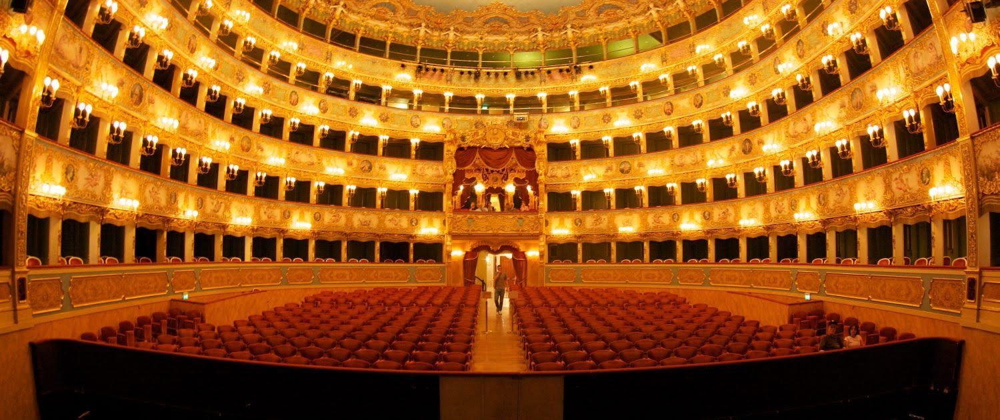

Teatro La Fenice is an opera house in Venice, Italy. It is one of "the most famous and renowned landmarks in the history of Italian theatre" and in the history of opera as a whole. Especially in the 19th century, La Fenice became the site of many famous operatic premieres at which the works of several of the four major bel canto era composers – Rossini, Bellini, Donizetti, Verdi – were performed.